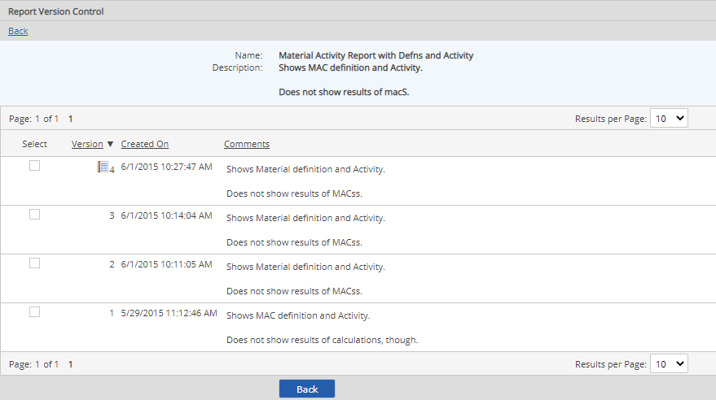

When you edit a report configuration and save it, a new version of the report is created automatically. A history of all previous versions is stored.
From the list of previous versions, you can do any of the following:
View previous versions of a report - In the Reports library, right click the name of the report and choose Versions. The versions of the report are shown.

Run a previous version of a report - Select the version, right click and choose Open. If you have Edit permission, you can roll back versions by setting a previous version as the active version.
Revert to a previous version - Select the version, right click and choose Revert to Version.
Delete a version - Right click the version and choose Delete. If you delete the current version, the previous version is automatically restored as the current version.